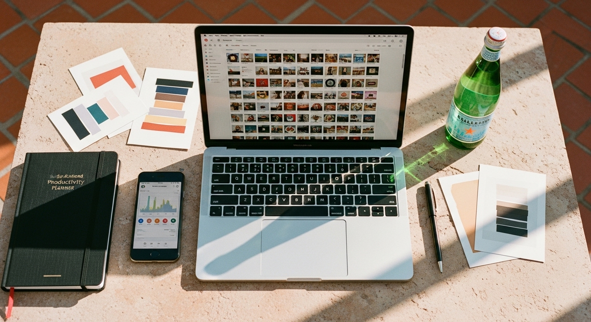
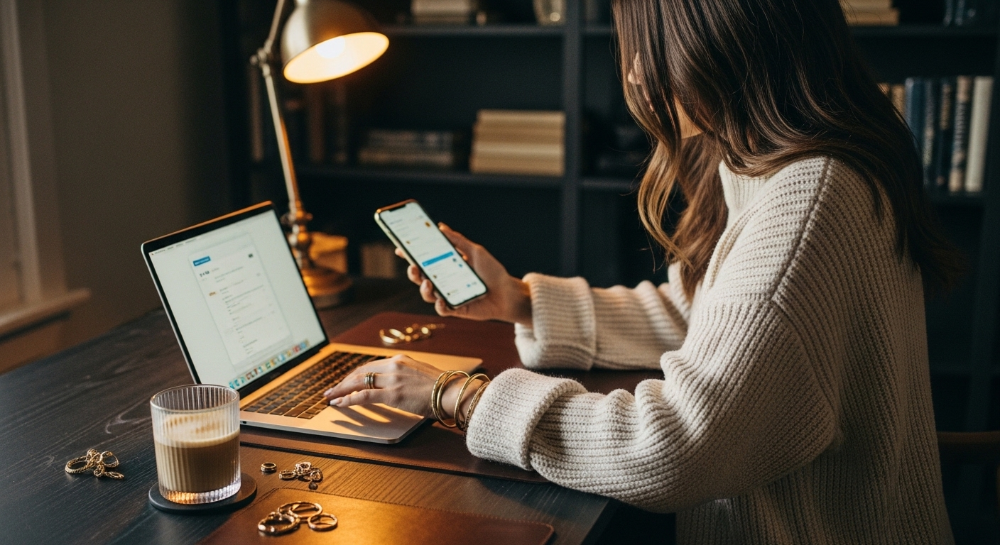
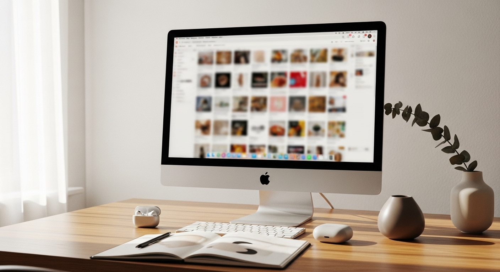

pinterest affiliate marketing



PINTEREST AFFILIATE MARKETING: HOW TO EARN PASSIVE INCOME FROM A PLATFORM WHERE PEOPLE ACTUALLY WANT TO BUY
You have been posting on Instagram for months. Maybe years. You show up, create content, engage with comments - and still feel like you are shouting into a void where nobody is ready to spend money.
Meanwhile, Pinterest sits there quietly. 537 million monthly users. 75% of weekly users say they are "always shopping." Half of them view the platform primarily as a place to buy things.
This is not a social network where people scroll to kill time. Pinterest is a search engine where people actively look for solutions - and then purchase them.
The difference matters. On Instagram, you are interrupting someone's entertainment. On Pinterest, you are answering a question someone already typed in. That shift changes everything about how affiliate marketing actually works.
Here is what most guides will not tell you: follower count barely matters on Pinterest. A brand new account with zero followers can generate affiliate income within 60-90 days if the keyword strategy is right. I have seen coaches with 200 Pinterest followers outperform accounts with 50,000 - because they understood how to meet buyers where they are already searching.
This post walks you through exactly how Pinterest affiliate marketing works in 2025-2026, which programs to join, how to create pins that convert, and the specific mistakes that tank most people's results before they even start.
If you have been looking for a way to earn money that does not require you to be online every single day - this is it.
WHY PINTEREST USERS ARE DIFFERENT FROM EVERY OTHER PLATFORM
The way people use Pinterest fundamentally changes what works for affiliate marketing.
On Instagram or TikTok, users open the app to be entertained. They scroll passively. They might see your product recommendation, but they were not looking for it. That creates friction - you are interrupting their experience to suggest they buy something.
Pinterest flips this completely. People open the app because they want to find something specific. They type in searches like "home office setup ideas" or "best planners for entrepreneurs" or "gifts for new business owners." They are actively researching purchases they plan to make.
This intent-based behavior is why affiliate recommendations feel helpful on Pinterest instead of salesy. You are not pushing products on people who did not ask. You are answering questions they already have.
The data backs this up. According to Pinterest's own research, 50% of users view the platform as a shopping destination. Compare that to Instagram, where most users describe it as a place to connect with friends or follow celebrities. The mindset is completely different.
What does this mean for you as a coach, service provider, or small business owner?
It means your affiliate content does not need to feel like selling. When someone searches "best journals for goal setting" and finds your pin recommending a specific journal you love - that feels like a helpful suggestion from someone who knows what they are talking about. Not an ad.
This is especially powerful for female entrepreneurs in service-based businesses. Your audience trusts your recommendations because you use the same tools they need. A business coach recommending her favorite planner. A virtual assistant sharing the project management tool she actually uses daily. A wedding photographer suggesting the getting-ready robes she sees brides love.
The trust you have already built transfers directly to affiliate recommendations - but only on a platform where people arrived ready to buy.
HOW PINTEREST AFFILIATE LINKS ACTUALLY WORK NOW
Pinterest banned affiliate links back in 2015. For years, marketers had to find workarounds - driving traffic to blog posts or using complicated redirect systems.
That changed. Pinterest now fully allows direct affiliate links on pins.
You can add affiliate URLs directly to:
- Standard image pins
- Idea pins
- Video pins
The rules are straightforward but non-negotiable:
You must disclose affiliate relationships clearly. This is an FTC requirement, not just a Pinterest guideline. Add "Affiliate" or "Includes affiliate links" to your pin description. Some people put it at the end of the description - that works fine.
You cannot use link cloakers that hide the final destination. Pinterest needs to see where users will land. Services that mask URLs or redirect through multiple steps will get your pins suppressed or your account flagged.
Pinterest's official affiliate partners get preferential treatment. Rakuten, LTK (formerly RewardStyle), ShopStyle, and Amazon Associates US are Pinterest's official partners. Pins using these networks may receive better distribution in the algorithm.
For most people starting out, Amazon Associates is the easiest entry point. The approval process is straightforward, the product selection is enormous, and your audience likely already trusts Amazon checkout. The downside is lower commission rates (1-10% depending on category) and a short 24-hour cookie window.
If you are in the lifestyle, fashion, or home space, LTK offers higher commissions but requires application approval. They are selective, so you will need an established audience before applying.
The simplest approach: start with Amazon Associates for physical products, then add individual brand affiliate programs for software and tools you already use. Canva, ConvertKit, Honeybook, Dubsado, and Flodesk all have affiliate programs. Many offer 20-30% recurring commissions - meaning you earn every month the customer stays subscribed.
THE BLOG-FIRST STRATEGY VS. DIRECT LINKING
You have two main approaches for Pinterest affiliate marketing. Both work. But one builds something more sustainable.
Direct linking: You create a pin with an affiliate link as the destination URL. Someone clicks, lands on the product page, buys, you earn commission. Simple.
Blog-first: You create a pin that links to your own blog post. The blog post contains affiliate links. Someone clicks, reads your content, clicks through to the product, buys, you earn commission.
Why would you add an extra step?
Because the blog-first approach builds multiple assets at once.
When someone lands on your blog post, you can:
- Capture their email address (for future marketing)
- Recommend multiple related products (more commission opportunities)
- Build authority in your niche (they remember you, not just the product)
- Rank on Google for the same keywords (double the traffic sources)
- Retarget them with ads later (if you choose to run paid traffic)
The direct linking approach treats Pinterest like a vending machine. Put in pins, get out commissions. It works, but you own nothing except the Pinterest account.
The blog-first approach builds a real asset. Your blog post can rank on Google, get shared on other platforms, and continue generating traffic for years. If Pinterest changes their algorithm tomorrow - and they will - you still have your site.
For coaches, consultants, and service providers building personal brands, the blog-first strategy is almost always the better long-term play.
That said, you can do both. Use direct links for quick tests to see which products your audience responds to. Then create in-depth blog content around the winners.
A virtual assistant named Maria does this well. She creates quick test pins with direct Amazon links to organizing products. When one performs well - a specific label maker, for example - she writes a full blog post: "How I Organize Client Files (And the Exact Tools I Use)." That post becomes a traffic magnet from both Pinterest and Google, with multiple affiliate links woven throughout.
CHOOSING AFFILIATE PROGRAMS THAT MATCH YOUR AUDIENCE
The affiliate programs you choose matter more than how many pins you create.
Promoting random products because the commission is high leads nowhere. Your audience can tell when you are recommending something you do not actually use. The trust evaporates.
Start with what you already use and love.
As a coach or service provider, you have tools in your business right now that your audience needs. That is your affiliate goldmine.
For life coaches and mindset coaches:
- Journals and planners (Amazon Associates)
- Book recommendations (Amazon Associates)
- Meditation apps (many have affiliate programs)
- Course platforms like Teachable or Kajabi (both offer affiliate partnerships)
- Self-care products your clients ask about
For virtual assistants and online service providers:
- Project management tools (Asana, ClickUp, Monday - check their partner programs)
- Cloud storage solutions
- Client management software (Honeybook, Dubsado)
- Email marketing platforms (ConvertKit, Flodesk)
- Productivity apps and templates
For wedding and event professionals:
- Getting-ready accessories (robes, hangers, emergency kits)
- Décor items on Amazon
- Planning tools and apps
- Vendor recommendation platforms
For business coaches and consultants:
- Business books (Amazon Associates)
- Software you teach clients to use
- Office setup and tech equipment
- Templates and digital tools
The key question: What do your clients ask you about that you do not sell yourself?
That question reveals your affiliate opportunities. A Canva template seller gets asked about business cards all the time - but she does not sell business cards. Moo has an affiliate program. A business coach gets asked about the best books for starting out - every book recommendation is an affiliate opportunity.
Your affiliate strategy should feel like an extension of your existing expertise. When it does, the recommendations convert because they come from genuine experience.
THE KEYWORD STRATEGY THAT ACTUALLY DRIVES PINTEREST TRAFFIC
Follower count does not determine your Pinterest success. Keywords do.
This is the most important shift in thinking for anyone coming from Instagram. On Instagram, your content reaches your followers (and occasionally the Explore page). On Pinterest, your content reaches anyone searching for the terms you've optimized for.
A pin's discoverability depends on keyword optimization in:
- Pin titles
- Pin descriptions
- Board names
- Board descriptions
- Your profile bio
How do you find the right keywords?
Start in the Pinterest search bar itself. Type the beginning of your topic and watch what auto-suggests appear. Those suggestions are real searches people make.
If you type "morning routine" you might see:
- morning routine ideas
- morning routine for women
- morning routine checklist
- morning routine aesthetic
- morning routine for busy moms
Each of those is a keyword you can target with specific content.
Your pin title should include the primary keyword in the first half. Pinterest weighs the first words more heavily.
Good: "Morning Routine Ideas for Busy Entrepreneurs - Free Printable Checklist"
Not as good: "Free Printable Checklist for Your Morning Routine Ideas"
Your pin description should include 2-3 keyword variations naturally. Do not stuff keywords unnaturally - Pinterest penalizes this. Write like you are describing the pin to a friend, but make sure the relevant search terms appear.
Good description: "This morning routine checklist helps busy women start their day with intention. Includes a printable daily planner page and my favorite productivity tools for entrepreneurs who want to stop feeling rushed every morning."
That description naturally includes: morning routine checklist, busy women, daily planner, productivity tools, entrepreneurs.
Your boards function like content categories for Pinterest's algorithm. Name them using searchable phrases, not clever titles.
Good board name: "Morning Routine Ideas for Women"
Bad board name: "Rise and Shine Vibes"
A new Pinterest account can generate meaningful affiliate traffic within 60-90 days with consistent, keyword-rich pinning. The algorithm does not care if you have 50 followers or 50,000. It cares whether your content matches what people search for.
THE SEASONAL TIMING SECRET MOST PEOPLE MISS
Pinterest's search behavior runs on a predictable calendar. And it runs early.
People search for Christmas gift ideas starting in September. Wedding planning content spikes in January and February - months before the actual wedding season. Back-to-school searches begin in June.
Pinterest trends spike 45-90 days before the event or season.
This timeline catches most people off guard. They create Valentine's Day gift guides on February 1st and wonder why nobody sees them. By then, the Pinterest algorithm has already decided which pins to show - and it favors content that was published and gained traction weeks earlier.
What does this mean for your affiliate strategy?
You need to think and publish at least two months ahead.
If you want your holiday gift guide to perform in November and December, publish it in September or early October. Give the algorithm time to index your content, let early pinners save it, and build momentum before the peak search period.
A practical affiliate content calendar:
- January: Spring home refresh, wedding planning, New Year business goals
- February: Spring organizing, Easter prep begins, Mother's Day early planning
- March: Spring cleaning, outdoor entertaining, graduation gifts
- April: Summer planning, Memorial Day prep, Father's Day
- May: Summer travel, back-to-school early prep, outdoor living
- June: Fourth of July, summer entertaining, fall planning begins
- July: Back-to-school peak, fall décor, Labor Day
- August: Fall fashion, Halloween early content, holiday shopping begins
- September: Halloween peak, Thanksgiving prep, Christmas gift guides launch
- October: Holiday content peak, New Year planning begins
- November: New Year, winter content, January business planning
- December: New Year goals, winter activities, Valentine's Day early
Create your seasonal affiliate content 60-90 days early, then pin it consistently leading up to the peak. One Christmas gift guide published in September can drive affiliate income for three months straight.
CREATING PINS THAT ACTUALLY GET CLICKED
A beautiful pin that nobody clicks earns you nothing.
Pinterest is a visual platform, yes - but the visuals need to drive action. That means your pins need to communicate value quickly and make people want to see more.
The optimal pin size is 1000x1500 pixels (2:3 ratio). This takes up more vertical space in the feed, which means more visibility.
Your pin needs these elements:
A clear, readable headline. This is not the place for subtle design. The text should be large enough to read on a phone screen. Use high-contrast colors - dark text on light background or light text on dark background. Avoid thin script fonts that disappear at small sizes.
A visual that matches the content. If your pin says "Best Planners for Entrepreneurs," show a planner. Sounds obvious, but many pins use generic stock photos that do not connect to the headline. Pinterest's algorithm and users both respond better to specific visuals.
One clear call to action. "Click for the full list" or "Get the free checklist" or "See all 10 recommendations." Tell people what to do next.
Strong affiliate pin headlines follow these patterns:
- "10 Best [Products] for [Specific Audience]"
- "The [Product] I Use Every Day as a [Your Role]"
- "[Product] vs [Product]: Which is Better for [Outcome]?"
- "My Favorite [Category] for [Specific Use Case]"
- "[Number] [Products] Under $[Price] That Actually Work"
Create multiple pins for the same content. This is where most people underperform. One blog post should have 5-10 different pin designs - different images, different headlines, different color variations.
Why? Because different versions perform differently with different audiences. You cannot predict which one will take off. More variations means more chances for the algorithm to find the combination that resonates.
Video pins currently receive algorithmic preference in 2025-2026. Pinterest is pushing video content hard. Short-form video pins (15-60 seconds) featuring affiliate products receive significantly more impressions than static images.
A video showing you flipping through your favorite planner. A quick walkthrough of how you use a specific tool. An unboxing of products you are recommending. These outperform static images for most affiliate content right now.
Most affiliate marketers still rely only on static pins. That is an opportunity for you.
THE MISTAKE THAT TANKS YOUR PINTEREST AFFILIATE RESULTS
Your pin shows a specific product. Someone clicks. They land on... your homepage.
This mismatch destroys your affiliate conversions.
Pinterest's algorithm tracks what happens after someone clicks. If they immediately bounce back - leaving the destination page within seconds - that signals to Pinterest that your pin did not deliver what it promised. Future pins get shown to fewer people.
The destination must match the expectation.
If your pin features "The Best Planner for Goal Setting," the link should go directly to:
- That specific planner's Amazon page (for direct affiliate links)
- Your blog post reviewing that planner (for blog-first strategy)
- A roundup post where that planner is prominently featured
Not your homepage. Not your services page. Not a general "resources" page where they have to hunt for the product.
This alignment matters for both user experience and algorithm performance. Pinterest wants users to find what they are looking for. When they do, they use Pinterest more. When they don't, they trust the platform less.
Every pin needs one clear destination that delivers exactly what the pin promised.
The same principle applies to your blog posts. If someone clicks expecting product recommendations, do not make them scroll through 1,000 words of introduction before seeing any products. Put value above the fold. Get to the recommendations quickly. Then expand with details for people who want them.
A STEP-BY-STEP PINTEREST AFFILIATE SETUP (YOUR FIRST 30 DAYS)
Here is exactly how to get started - broken into actionable steps you can complete this month.
Days 1-3: Account Setup
Step 1: Create a Pinterest Business account (or convert your personal account) at business.pinterest.com
Step 2: Complete your profile with keywords in your business name and bio. Example: "Jane Smith | Business Templates & Branding for Coaches"
Step 3: Claim your website to access analytics and enable rich pins
Step 4: Create 8-10 boards with keyword-rich names. Mix niche-specific boards ("Branding Ideas for Coaches") with broader lifestyle boards ("Home Office Inspiration")
Days 4-7: Affiliate Program Applications
Step 5: Apply to Amazon Associates (approval usually within 24-48 hours)
Step 6: List 5 tools or products you already use in your business. Check if each has an affiliate program. Apply to 2-3 that fit.
Step 7: Set up proper disclosures on your website if you are using the blog-first strategy. Create a "Disclosure" page and add affiliate notices to relevant posts.
Days 8-14: Content Creation
Step 8: Write your first affiliate blog post. Start with a roundup format - "10 Best [Products] for [Your Audience]." Include 5-7 products with affiliate links. Make it genuinely helpful.
Step 9: Create 5 pin designs for that blog post using Canva. Vary the headlines, images, and colors.
Step 10: Create one video pin showing one of the products in use. Keep it 15-30 seconds with text overlay so it works without sound.
Days 15-21: Publishing & Distribution
Step 11: Schedule your pins using Pinterest's native scheduler or a tool like Tailwind. Spread them across different boards and times.
Step 12: Pin 5-10 times per day - a mix of your own content and repins from others in your niche. Consistency matters more than volume.
Step 13: Create your second affiliate blog post and repeat the pin creation process.
Days 22-30: Optimization
Step 14: Check Pinterest Analytics. Note which pins have high impressions but low clicks (redesign needed) and which have good click-through rates (create more variations).
Step 15: Review your affiliate dashboard. Check clicks vs. conversions. If clicks are high but conversions are low, the landing page experience needs work.
Step 16: Create 5 more pin variations for your top-performing content.
After 30 days, you will have the foundation in place. Months 2-3 are about consistency and scaling what works.
HOW TO SCALE ONCE YOUR FIRST PINS START PERFORMING
You have pins getting impressions. Some are getting clicks. Maybe you have seen your first affiliate commission come through. Now what?
Double down on winners, not volume.
When a pin performs well, create 10+ variations of it. New images, slightly different headlines, different color schemes. The algorithm has shown you that this content resonates - give it more chances to find more of the right people.
When a blog post drives consistent traffic, expand on the topic. If "Best Journals for Goal Setting" works, create "Best Planners for Weekly Reviews" and "Best Notebooks for Morning Pages." You have found a vein - keep mining it.
Add video versions of your top static pins. This is the easiest scaling move right now. Take your best-performing static affiliate pins and create simple video versions. A 20-second video of you flipping through a planner. A quick screen recording of how you use a software tool. Pinterest is prioritizing video, and your proven topics will perform even better in this format.
Expand into adjacent affiliate programs. Once you know which products convert for your audience, look for related opportunities. If your audience buys planners, they probably also buy pens, desk organizers, and productivity apps. If they buy business books, they probably also invest in courses and coaching.
Build an email list from your Pinterest traffic. This is where affiliate income becomes truly passive. Create a free resource related to your affiliate content - a checklist, a comparison guide, a curated list of recommendations. Offer it in exchange for an email address.
Now you can promote affiliate products through email too. One affiliate recommendation to an engaged email list of 500 people will often outperform a month of Pinterest pinning. And that list keeps growing as your Pinterest traffic does.
If you are building your business brand alongside affiliate income, your Pinterest strategy and your business content can work together. The [3-in-1 Business Marketing Bundle](https://switzertemplates.com) includes everything you need to look professional while you grow - a complete branding kit, a Wix website template, and a Canva landing page. When your affiliate pins drive traffic to your site, that site needs to convert visitors into clients or subscribers. Done-for-you templates handle the design so you can focus on the strategy.
COMMON QUESTIONS ABOUT PINTEREST AFFILIATE MARKETING
How much can you realistically earn?
This varies wildly based on niche, content volume, and product selection. I have seen service providers earn $200-500/month from a handful of strategic posts. I have seen others build to $2,000-4,000/month with consistent effort over 12-18 months.
The 16% of all e-commerce sales that comes through affiliate programs represents billions of dollars annually. Your slice depends on how well you match your audience to the right products.
Do you need a blog, or can you just link directly?
Both work. Direct linking is faster to start. Blog-first builds more assets long-term. Most people benefit from starting with direct links to test what resonates, then creating blog content around winners.
How many pins should you post per day?
Start with 5-10. Consistency matters more than volume. Five pins per day, every day, outperforms 30 pins one day and nothing for a week.
How long until you see results?
Expect 60-90 days for meaningful traction if you are consistent with keyword-optimized content. Pinterest is not instant gratification - it is a compounding investment.
What niches work best for Pinterest affiliate marketing?
Home décor, organization, fashion, beauty, food, parenting, weddings, and business tools all perform well. Anything with strong visual appeal and purchase intent. Abstract services without physical products are harder to promote via affiliate.
Do you need to show your face?
No. Many successful Pinterest affiliate marketers never show their face. Product photography, styled flatlays, and text-based pins all work. Video pins can show hands using products without showing faces.
WHY THIS MATTERS FOR YOUR BUSINESS BEYOND AFFILIATE INCOME
Pinterest affiliate marketing is not just about commissions. It is about building a traffic engine you control.
Every pin you create is an entry point to your world. Someone searching for "best planners for coaches" might click your affiliate pin, visit your blog post, see your services, and book a discovery call. The affiliate commission is almost incidental compared to what a client is worth.
This is especially true for coaches, consultants, and service providers. Your affiliate content positions you as someone who understands your audience's needs. It builds trust before you ever pitch your services.
The affiliate income is a bonus. The real value is the audience you build.
And that audience compounds. Every month, your best pins continue working. Your blog posts continue ranking. Your email list continues growing. Unlike social media posts that disappear in 24 hours, Pinterest content has a lifespan measured in months and years.
One wedding photographer I know created 15 affiliate blog posts over six months - gift guides, getting-ready essentials, reception décor ideas. Two years later, those posts still drive traffic every single day. Some of that traffic converts to affiliate sales. More importantly, some of it converts to photography inquiries.
You are not just building an income stream. You are building an ecosystem.
STARTING YOUR PINTEREST AFFILIATE STRATEGY TODAY
Pinterest affiliate marketing works because the platform attracts buyers, not browsers. 75% of weekly users are always shopping. Half see it as a shopping destination first.
You do not need a massive following. You need keywords that match what your audience searches for, products they actually need, and content that delivers value before asking for anything.
Start with one blog post featuring products you genuinely use. Create five pin variations. Post consistently. Check what works. Do more of that.
The process is not complicated. But it requires consistency that most people abandon after two weeks. If you can stay with it for 90 days, you will have something most business owners never build - a passive traffic and income source that works while you sleep.
If you want your Pinterest traffic to land on a website that actually looks professional, the [Switzertemplates Etsy shop](https://switzertemplates.etsy.com) has website templates, branding kits, and complete business bundles designed specifically for coaches and service providers. Because nothing kills affiliate conversions faster than sending qualified traffic to a site that looks like it was thrown together in an afternoon.
Your audience is searching right now. The question is whether they will find your pins - or someone else's.
Let me know in the comments below if you want me to cover any branding or marketing topics in more depth, and I'll make sure to create a blog post about it in the future.